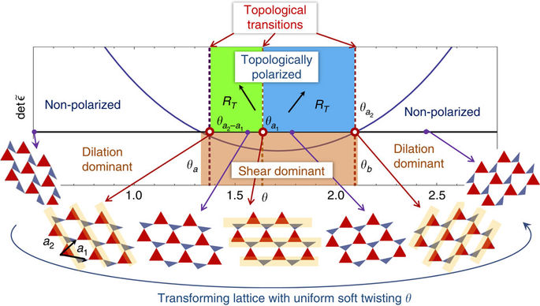
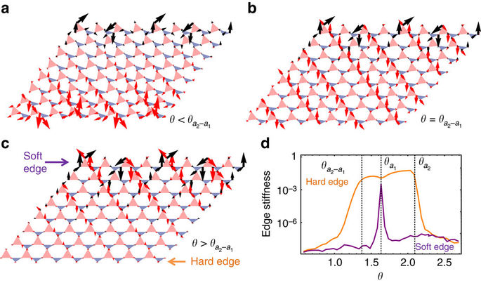

An introduction to Topological Mechanical Metamaterials
Abstract
Mechanical metamaterials are engineered materials whose structures give them novel mechanical properties, including negative Poisson’s ratios, negative compressibilities and phononic bandgaps. Of particular interest are systems near the point of mechanical instability, which recently have been shown to distribute force and motion in robust ways determined by a nontrivial topological state. Here we discuss the classification of and propose a design principle for mechanical metamaterials that can be easily and reversibly transformed between states with dramatically different mechanical and acoustic properties via a soft strain. Remarkably, despite the low energetic cost of this transition, quantities such as the edge stiffness and speed of sound can change by orders of magnitude. We show that the existence and form of a soft deformation directly determines floppy edge modes and phonon dispersion. Finally, we generalize the soft strain to generate domain structures that allow further tuning of the material.
Introduction
The emergence of mechanical stability is a central theme in many branches of condensed matter physics, ranging from jamming of granular matter1,2 to strain stiffening of biopolymer networks3,4,5 and structural phase transitions in crystals6. A universal language, which dates back to J. C. Maxwell, to characterize mechanical stability in various systems is based on frame models, which contain rigid struts connected by free-hinges7,8. The simple rule for the emergence of mechanical stability in these frames is 〈z〉=2d, where 〈z〉 is the average coordination number (number of struts that meet at a hinge) and d is the spatial dimension. Because each hinge as a point-like object in the model contributes d degrees of freedom and each strut contributes one constraint, structures satisfying 〈z〉=2d, now called Maxwell lattices9, contain just enough constraints for all the degrees of freedom and thus are at the verge of mechanical instability.
What is central to the understanding of mechanical stability is the concept of floppy modes, which are normal modes of deformation that do not stretch or compress any strut and only involve rotations at the hinges in the frame. In general these modes emerge when 〈z〉 < 2d and lead to instabilities, for example, flow of granular matter. A particularly interesting case is the generation of floppy modes by cutting a finite piece from an infinite Maxwell lattice. Because the hinges on the boundary have z < 2d, the finite system must have as many floppy modes as the length of the boundary. Recent studies reveal that these floppy modes exhibit very rich physics. They can either appear as plane wave modes that penetrate through the bulk2, or appear as modes localized on the edge10. In particular, Kane and Lubensky found that these floppy modes can reside on one side of a finite lattice, leaving the other side with no floppy modes and that this is controlled by the topology of the phonon bands11. This is analogous to quantum topological states of electrons, such as the quantum Hall effect and topological insulators, where edge modes are determined by the topology of the electron bands12,13. The phenomenon of floppy modes concentrating on one side of a lattice, called topological polarization, is a property of the lattice that is protected by topology, so it is highly robust against disorder and noise. Recent works have considered topological states of matter in a wide variety of mechanical and acoustic networks, including not only just mechanical frames14,15,16,17,18 but also biological microtubules19, coupled pendula20, gyroscopes21,22, acoustic resonators23, origami/kirigami24 and cogs with coupled orientations25. Because low-energy modes often dominate the mechanical response of a structure, the rich spectrum of floppy modes in Maxwell lattices provides a great opportunity to design mechanical metamaterials in which novel mechanical responses can be programmed.
Here we show that, interestingly, simple operations that cost little energy can be utilized to induce transitions that change the topological polarization in a structure, analogous to the change of topological states in the quantum Hall effect through the change of the magnetic field. This leads to a design principle for mechanical metamaterials that can be easily and reversibly transformed between states with dramatically different properties, and we use example lattices to illustrate this (see Supplementary Video). Recently there have been many interesting proposals for tunable mechanical metamaterials26,27,28,29,30,31,32,33,34,35. What is unique to this design is that, first, the unusual asymmetric properties in the different states are protected by topological invariants of the phonon bands and thus the system is more robust against possible wear from repeated transformations, and second, the operation is based on a soft deformation of the structure that uniformly twists the angles at the hinges throughout the system and thus costs little energy and involves little stress. Hence, we refer collectively to such systems as transformable topological mechanical metamaterials (TTMM). We further show that any structure exhibiting such a uniform soft deformation can be classified via whether this deformation is predominantly shear (shear dominant) or dilation (dilation dominant), two regimes with sharply different properties. This general classification provides a guideline for the creation of new TTMMs. We discuss possible experimental systems that can be used to fabricate TTMMs. We also discuss how these soft deformations can be used to create novel domain structures, in which topological polarizations can be tuned locally, leading to versatile control of stiffness along edges and domain walls.
Results
Topological transitions induced by uniform soft twistings
We start our discussion of the topological transitions using the example of the deformed kagome lattice, which is the first two-dimensional lattice that was shown to exhibit topological polarization11. This lattice is constructed by connecting rigid triangles with free hinges as shown in Fig. 1 (the term deformed refers to the fact that this lattice consists of triangles of shapes that differ from those in the regular kagome lattice, and does not mean the lattice is stressed). This structure is a Maxwell lattice because each triangle can be viewed as three struts and thus each hinge connects four struts, so z=2d. The lattice in Fig. 1 has chosen side lengths (1, 1, 1), (0.72, 1, 0.57) for the two triangles.
Figure 1: Topological transitions of a deformed kagome lattice by uniform soft twisting.
The topological polarization RT, as introduced in ref. 11, is a vector that represents topological invariants of the phonon modes in the first Brillouin zone of the lattice, and is determined by the lattice geometry. When RT=0 the lattice has floppy modes on all edges, but when RT≠0, the direction it points towards is the edge that gains extra floppy modes, whereas the opposite edge lacks floppy modes.
As first shown by Guest and Hutchinson36, all two-dimensional periodic Maxwell lattices must exhibit at least one homogeneous deformation (that is, all repeating units deform in the same way) that is soft (no stretching or compression of struts and only rotations at hinges), regardless of the specific unit cell geometry (more detailed discussion in Supplementary Note 2). The deformed kagome, as a Maxwell lattice, must exhibit such a mode, as shown in Fig. 1. We find that as the lattice follows this nonlinear soft deformation the topological polarization RT can change, which dictates that the edge floppy modes have to move from one edge to the opposite edge at the transition. In the following discussion, we call such uniform floppy deformations uniform soft twistings, and we use a bond angle θ (Fig. 1) as the coordinate to label states along the path of the uniform soft twisting.
As shown in Fig. 1 the deformed kagome lattice experiences three topological transitions at , , (labelled by the associated lattice directions in terms of the primitive vectors of the lattice marked in Fig. 1), with their order dependent on lattice geometry. At twisting angles below the first or above the last transition, the lattice has RT=0 where floppy edge modes reside on all edges. As θ→ edge modes on the bottom edge penetrate deeper and deeper into the bulk and eventually become bulk modes (with zero decay rate) at θ=. Upon further increasing θ, these modes transform into edge modes on the top edge, doubling the number of floppy modes there. This evolution of floppy modes as θ increases is illustrated in Fig. 2a–c. The transitions at and are of the same nature, where floppy modes shift from certain edges to edges on the opposite side of the system. As θ crosses the three critical angles , , , the change of RT follows 0→(a2−a1)→a2→0, so the two regimes <θ< and <θ< have distinct nonzero RT and are topologically polarized. The transitions at , , are called topological transitions because a topological index RT changes its value across them. At a transition, edges of the triangles form straight lines along a particular direction, which is intimately related to the rise of bulk floppy modes at the transition. As discussed in refs 9, 10, 11, straight lines in the bulk allow states of self stress (ways to distribute internal stress without net forces on any parts) such that floppy bulk modes can arise. This shares interesting similarities with the quantum Hall effect, where the system must pass through a metallic state as it transforms between insulating states of different topological indices. It is also reminiscent of the process whereby the topological polarization of a one-dimensional Maxwell frame lacking translational invariance may be altered gradually by a soliton, a nonlinear local deformation14.
Figure 2: Transformation of edge modes and stiffness.
These transitions lead to a dramatic change in the edge stiffness because an edge becomes rigid as it loses floppy modes. We perform conjugate-gradient minimization calculations of the response to a point force on one edge of a lattice with other edges held fixed (for details see Supplementary Note 3), and find that the edge stiffness increases by orders of magnitude as floppy modes leave the edge (Fig. 2d).
Classification of structures with soft twistings
The example of the deformed kagome lattice provides a simple design for mechanical metamaterials that are transformable between states of sharply different but topologically protected mechanical properties. To explore new structures that exhibit such topological transitions, here we also study the general classification of structures that exhibit uniform soft twistings.
To achieve this general classification, we first analyse the consequences of the uniform soft twisting, which (around a given state) can be written in terms of the left Cauchy–Green strain tensor which is homogeneous in space and is a function of θ. As proved in Supplementary Note 4, utilizing the fact that any elastic deformation in flat space must have zero curvature, the existence of the zero energy uniform deformation leads to two families of spatially varying floppy modes described by strain tensors.